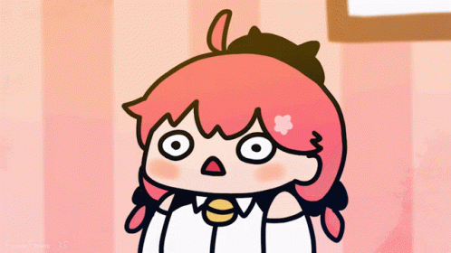

— 自 我 介 紹 —
Peter Chiu
A Mobile Developer in Training
✦
按任意鍵或點擊畫面開始
COMMAND
- ▶狀態STATUS
- ▶技能SKILL
- ▶道具ITEM
- ▶夥伴PARTY
- ▶對話TALK
↑↓ 選擇 Enter 決定
STATUS
?
Peter Chiu
Lv 5
- 職業
- Mobile 開發見習生
- 出身
- 台北・台灣
- 所屬
- （學校或公司，待補）
HP
80/100
學習熱情
MP
55/100
咖啡因
裝備
PythonJavaJavaScriptHTMLCSS
SKILL
- HTML / CSS★★★★☆
- Java★★★☆☆
- Python★★★☆☆
- JavaScript★★☆☆☆習得中
- Git / GitHub★★☆☆☆
ITEM
- 個人網站×1
你現在看到的這個。純 HTML / CSS / JS。
- Java 課堂作業×?
待補：學校的 Java 專案。
- Python 小工具×?
待補：用 Python 寫過的腳本。
PARTY

さくらみこ Lv ???
推し。看 hololive 直播是我回血的方式。
（其他興趣待補：遊戲、音樂、運動……）
▼